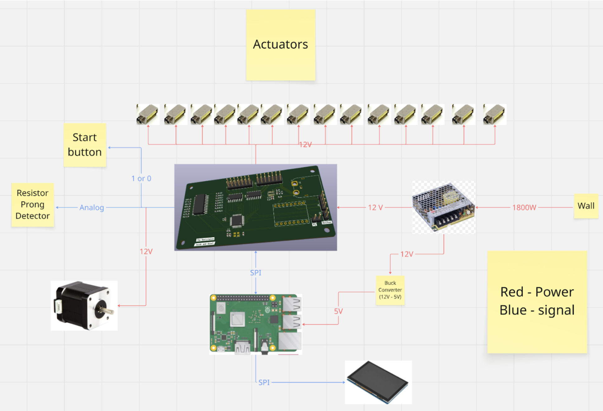

Electrical Design
System Design
The goal of the electrical team was to create a seamless interface that allowed users to sort resistor values into specific bins. The implementation combined an intuitive user interface with precise control systems to accurately route each resistor to its designated bin.
System Overview
Our electrical system consists of two tightly coupled elements. The first is the user interface, which requires an intuitive layout suitable for layman’s use. The second is the core functionality: the hardware responsible for actuation, sensing, and control. The user interface runs on a touchscreen controlled by a Raspberry Pi. When a user changes the system state, for example by updating a bin’s resistance value or pressing the start/stop button, the Raspberry Pi sends the updated state over a serial connection to our custom PCB via an Arduino Nano.

Custom Printed Circuit Board (PCB)
The custom PCB controls all the actuation in the system, including the 12 linear actuators for the sorting paddles, the stepper motor that drives the conveyor belt, and the resistance measurement module. The microcontroller unit (MCU) on our PCB is an AVR128DA48, which uses the same 8-bit AVR architecture as the microcontrollers commonly found on Arduino boards. Our linear actuators require 12V supply, so we use a low side driver to control which actuators receive this voltage. To control the stepper motor we use an A4988 stepper driver which energizes the motor coils to produce precise stepped motion. To measure resistors values, we use a 16:1 multiplexer to switch between different reference resistors. We do this so that each resistor under test is paired with an appropriate reference value, which improves the accuracy of our measurements.
On the PCB the microcontroller acts as the central unit that coordinates all sensors and actions. It remains idle and does not execute any control routines until it receives the appropriate serial commands from the Raspberry pi. The first action is to receive the mapping of resistor values to their corresponding bucket. Once this configuration is received, the motor is activated to drive the conveyor belt. The motor will keep spinning, and once the limit switch is triggered, the code begins cycling through the multiplexer inputs from the lowest to the highest voltage reference to determine an accurate voltage reference value.. Once the voltage reaches the correct threshold, the system applies the voltage divider equation to compute the unknown resistance and determine the resistor’s exact value. The measured resistance is then compared against each bin’s target value to check whether it falls within the allowed percent error range for that bucket. If the resistor falls within that bucket it is recorded in a two-dimensional array that tracks how many subsequent limit-switch triggers are needed before the actuator for that bucket must fire to divert it. The PCB uses an AVR128DA48 microcontroller, which provides multiple ADC channels and GPIO pins. The resistor-sensing circuit is connected to one of the ADC inputs, allowing the MCU to measure the analog voltage and infer the resistor value through the voltage divider calculation.
Click and drag to rotate the PCB. Scroll to zoom.
Diagrams
The following is a diagram depicting the flow of energy and data throughout our electrical subsystem.
The following is our electrical schematic of our printed circuit board.

Design Considerations
Arduino vs Custom PCB
To control the electronics in our system we evaluated two approaches: using an off-the-shelf Arduino or designing a custom PCB to control all subsystems. We decided to go with a PCB because we could customize it to our systems specific needs without the constraints the Arduino’s existing architecture presents. By designing a custom PCB, we ensured sufficient I/O pins for all subsystems, avoiding the pin-count limitations typically encountered with standard Arduino boards. Using a custom PCB also aligned with our learning goals. It allowed us to deepen our understanding of integrated systems and circuit design, making the project both a functional solution and a valuable educational experience. The PCB also significantly improved wire management by routing all connections through the board and dedicated terminals, ensuring organized, reliable, and failsafe wiring throughout the system.
Actuation: Servos vs Linear Actuators
To actuate the mechanism that knocks resistors off the belt we evaluated two approaches: using standard servos or linear actuators. We initially chose servos and tried to integrate them into the system, but their more complex circuitry and higher computational power made them an inefficient choice for our application. We then identified miniature solenoid-based actuators. This allows us to easily control them from being on to off. Their simple mounting and integration also made it much easier for the mechanical team to integrate them into the system because of their easy mounting and integration process. The main drawback of the solenoids was their 12V requirement, which forced us to include a higher-capacity power supply unit to reliably drive the system.
Belt Drive: Stepper vs DC Motor
For the belt drive, another key design decision was stepper vs DC motor for controlling the conveyor. Our initial intuition was to use the steppermotor because its precise step counting would let us track the belts position accurately and ensure resistors were dropped into the correct bins. The way stepper motors work is that they contain two internal coils that are energized in sequence, using magnetic fields and coil inductance to produce controlled, discrete rotational steps.The issue with this was that we started seeing brownouts on our MCU, caused by the intense electrical noise generated by the stepper motor when it attempted to pulse a large amount of current necessary to drive its precise rotation. We initially used a low-cost stepper motor driver that did not adequately isolate electrical noise, so we ultimately switched to a DC motor. Although the DC motor still generated some electrical noise, it was driven by an off board controller which simplified control and reduced the impact on our main electronics.